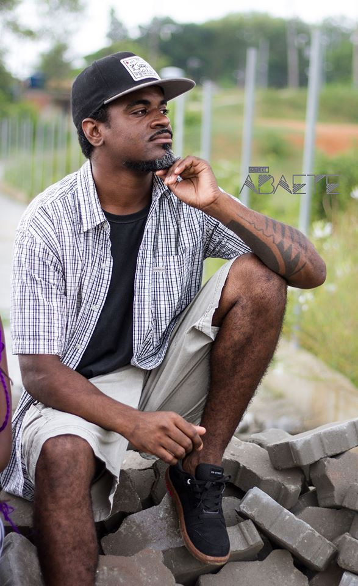
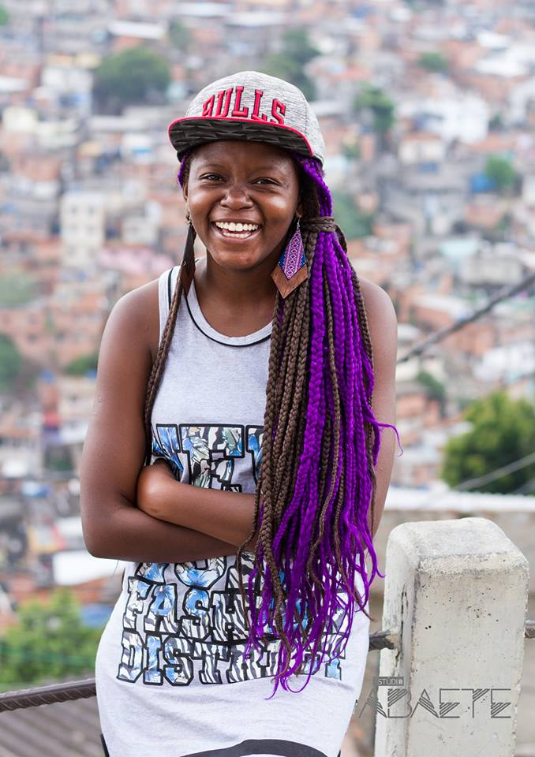

Criado por uma dupla de MC´s do Complexo do Alemão, os poetas Al-Neg e Mc Martina decidem se unir para comunicar a arte, cultura e suas realidades através da poesia. Acreditando que é possível combater os descasos do dia a dia passando a informação de dentro para dentro
Somos a força que se reergueu em meio a violência cotidiana, trazemos a cultura, a informação e o desejo de despertar nas crianças e adolescentes a curiosidade de conhecer melhor a nossa identidade.
Al-Neg
Iniciou sua carreira em 2011 como poeta, músico e rapper. Em 2012 começou o coletivo "O Som do Barraco", junto com Eddu Grau, Jessica Souto e André Valle, onde fizeram apresentações em diversos locais populares. No ano de 2013 iniciou um projeto antigo,criando o grupo "Nomades Rap" com o amigo (Jeff Monteiro),fazendo apresentações em rodas de rima nas ruas da cidade e em locais públicos fechado.Se desligou do grupo no ano de 2015 e seguiu carreira solo lançando um EP intitulado "Se liga na Visão".
Mc Martina
A rapper, Poeta e Produtora Cultural iniciou sua carreira em outubro de 2016 no Sarau do Alemão. Já se apresentou na Roda Cultural da CDD, no Poesia de Esquina, na Inauguração do espaço Território Inventivo, no Sarau do CEASM e outros pela cidade.